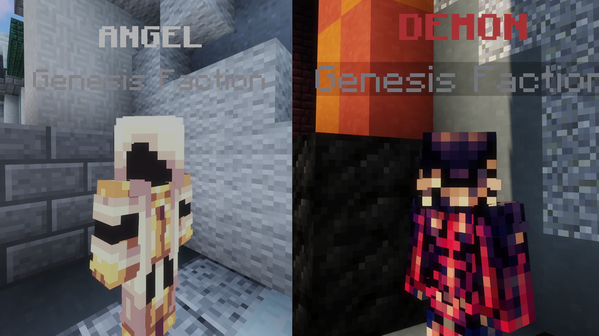
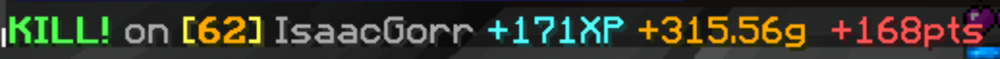

| Factions |
|  |
| The Angel and Demon. |
Factions are groups players can join that give buffs. They are exclusive to the Genesis map.
A faction can be joined by talking to either the Angel or Demon NPC in spawn and clicking the "Join this faction" button in their GUI. Joining a faction provides players with an icon next to their name in the tab list: Ψ for Angel and ♨ for Demon. Players can switch factions if they have fewer than 500 faction points. When the map changes, faction points are reset and the first five tiers of faction rewards are removed.
In order to unlock the faction's rewards, players need to earn faction points through killing players. Points are awarded in the following ways:
The following are the rewards for factions:
| Tier | Points | Angel Reward | Demon Reward |
|---|---|---|---|
| I | 30 | Deal +0.5♥︎ damage to players in the Demon faction. | Deal +0.5♥︎ damage to players in the Angel faction. |
| II | 100 | Unlock the Angel spawn. | Unlock the Demon spawn. |
| III | 250 | Diamond items cost 1/3 of the price. | The Mystic Well costs 1/3 of the price. |
| IV | 700 | Deal +0.25♥︎ damage to players wearning leather armor. | Deal +0.5♥︎ damage to players wearing diamond armor. |
| V | 1,500 | Accumulate +50% gold on your bounties. Earn +1 renown when earning renown from events. |
Accumulate +50% gold on your bounties. Earn +1 renown when earning renown from events. |
| VI | 4,000 | Earn Archangel Chestplate. | Earn Armageddon Boots. |
| VII | 7,000 | Permanently gain +1% XP from kills. Can be claimed up to 15 times. | Permanently gain +0.2g from kills. Can be claimed up to 15 times. |
Trivia
|  |
| A player receiving 168 faction points from a kill. |
The maximum number of points that can be earned from killing a single player is 168. This can be achieved if the victim is on the opposite faction, has 36 mystic items in their inventory, is wearing a Golden Helmet, Archangel Chestplate, mystic pants, and Armageddon Boots, and is standing on a King of the Hill. Killing this player 42 times would be enough to unlock the 7,000-point Tier VII reward.